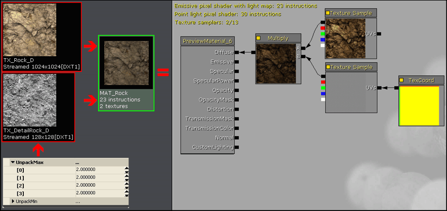
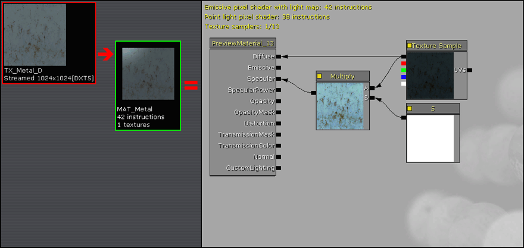
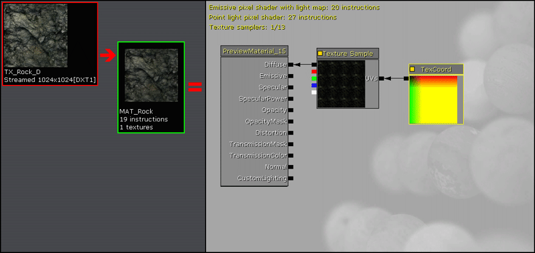
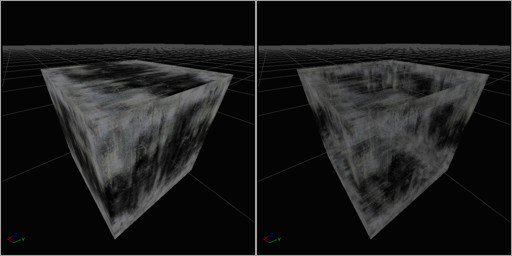

UDN
Search public documentation:
MaterialBasicsJP
English Translation
中国翻译
한국어
Interested in the Unreal Engine?
Visit the Unreal Technology site.
Looking for jobs and company info?
Check out the Epic games site.
Questions about support via UDN?
Contact the UDN Staff
中国翻译
한국어
Interested in the Unreal Engine?
Visit the Unreal Technology site.
Looking for jobs and company info?
Check out the Epic games site.
Questions about support via UDN?
Contact the UDN Staff
マテリアルの基本: 最も一般的な基本マテリアルタイプ作成のためのビジュアルガイド
ドキュメントの概要: 基本的なマテリアル作成のチュートリアル。 ドキュメントの変更ログ: 初稿は David Green? 。マテリアルの基本: 概要
このチュートリアルでは、一般的な基本マテリアルタイプを作成するための簡潔なビジュアルガイドを提供します。ここでの作業は、少なくとも 汎用ブラウザ での テクスチャのインポート 、および マテリアルエディタ の基本的な使い方を理解されていることを前提としています。 Unreal Engine 2.5 や Unreal Tournament 2004 のレベルデザインに精通している方は、このチュートリアルに登場する基本マテリアルの多数の名前に聞き覚えがあると思います。これらは UE2.5 の同等のマテリアルと似た機能を提供しています。 これらの基本マテリアル同士は頻繁に組み合わせられ、より複雑なマテリアル シェーダーが生成されます。ディテール テクスチャ
UE3 のマテリアル システムには UE2.5 のようなディテール テクスチャ プロパティはありませんが、同様の機能は非常に簡単に作成することができます。 UT2004 のディテール テクスチャに似たディテール テクスチャなら非常に効果的です。これらはシームレスでタイル可能なグレースケール テクスチャで、そのバイヤス値はほとんどが中間の 127 グレーに近い値です。 ディテール テクスチャをインポートした後で、その UnpackMax プロパティを 2.0 から 3.0 までの間の値に設定します。通常は Multiply (乗算) 演算中は最終マテリアルが暗くレンダリングされますが、この設定によりアンパックされたテクスチャの明るさが増します。デフォルトの UnpackMax 値は 1.0 です。 TexCoord (テクスチャ座標) デバイスの UTiling と VTiling を、ディテール テクスチャのタイリング量に適した値に設定します。通常これは用途に合わせて 8 から 64 までの範囲で指定します。 これらのディテール テクスチャは、静的メッシュとテレインの両方に使用できます。

スペキュラーの強化
上図に示すように、ベースのディフューズテクスチャから派生したマテリアルスペキュラーが不自然に見えることがよくあります。これは、同様の明るさ (luminance) を持つテクスチャピクセル全体に、スペキュラーエフェクトが均等に適用されるためです。スペキュラー効果を際立たせ、NormalMap 深度を高めるために、Power 式を使って派生スペキュラーのコントラストを増やすことができます。
Power 式はコントラストの調整と同じように機能し、Exp 値が 1.0 の場合は変化がなく、1.0 から 2.0 の間の場合はコントラストが増大します。 Power 式により大きくなったコントラストに数字をかけて、テクスチャの明るさの合計レベルを上げて普通に戻します。Multiply 定数を 16 や 32 などの非常に高い値に設定すると、通常はスペキュラー エフェクトの明るい方のエッジが押出されてブルーミングエフェクトが生じます。
インスタント スペキュラー
マテリアル コレクション内の光沢のあるメタルの場合、ベースのディフューズ テクスチャ自体から直接派生するスペキュラーを簡単に追加することができます。 ディフューズ テクスチャに 1 より大きい定数値をかけて、ピカッと光るスペキュラーのハイライトを作成します。通常は 4 から 8 までの範囲の定数値が最適です。8 を超えるとスペキュラーをブルーム (光のあふれ出しやにじみ) 効果を持つ「輝き」へと変化させます。 注意: スペキュラー効果は、ディフューズ テクスチャのアルファ チャネルの情報から (テクスチャに同様の機能が含まれている場合)、または別の二次的なテクスチャから提供することもできます。これにより、ディフューズ テクスチャ本体から多彩なカスタム スペキュラーを作成して追加することができます。 注意: マテリアルにスペキュラーを追加すると、割り当てられているすべての法線マップの「深度」の質も上がります。

スペキュラーの強化
上図に示すように、ベースのディフューズテクスチャから派生したマテリアルスペキュラーが不自然に見えることがよくあります。これは、同様の明るさ (luminance) を持つテクスチャピクセル全体に、スペキュラーエフェクトが均等に適用されるためです。スペキュラー効果を際立たせ、NormalMap 深度を高めるために、Power 式を使って派生スペキュラーのコントラストを増やすことができます。
Power 式はコントラストの調整と同じように機能し、Exp 値が 1.0 の場合は変化がなく、1.0 から 2.0 の間の場合はコントラストが増大します。 Power 式により大きくなったコントラストに数字をかけて、テクスチャの明るさの合計レベルを上げて普通に戻します。Multiply 定数を 16 や 32 などの非常に高い値に設定すると、通常はスペキュラー エフェクトの明るい方のエッジが押出されてブルーミングエフェクトが生じます。
法線マップ
Unreal エンジンの新機能である法線マップは、マテリアルに 3D のディテールを提供します。 ディフューズと法線テクスチャをインポートします。法線テクスチャの場合は、必ず CompressionSettings (圧縮設定) を TC_Normalmap に、LODGroup (LOD グループ) を TEXTUREGROUP_WorldNormalMap に設定してください。 注意: マテリアルにスペキュラーを追加すると、割り当てられているすべての法線マップの「深度」の質も上がります。
法線マップの強化
ときにには、Normalmap テクスチャが提供するバンプエフェクトの量が足りないことがあります。Normalmap エフェクトまたはその深度を上げるには、NormalMap TextureSample に Constant3Vector を掛けて、B (Blue または Z) ベクトルの値を 1.0 以未満 (0.5 または 0.75 など) に変更します。
R と G の値を 1.0 より高くすると、Normalmap の深度も増えますが、マテリアル上のすべてのスペキュラーの視覚効果が多少変化します。
R と G の値は 1.0 から 2.0 の間、B の値は 0.25 から 1.0 の間で自由に調整してください。 B を 1.0 のままにして R と G を 1.0 未満に下げることで、Normalmap の深度の量を減らすこともできます。例えば、R と G を 0.5 にすると、Normalmap 深度がかなり減少します。
ディテール法線マップ
ディテール テクスチャがディフューズ テクスチャに綿密なディテールを加えるのと同様に、ディテール法線マップも法線マップ テクスチャに詳細なディテールを追加することができます。これは最終マテリアルに高解像度のバンプディテールを加えるので、法線マップ テクスチャの解像度が 512x512 などのように低い場合に最も役に立ちます。 ノイズ法線マップとは、ペイント ソフトウェアでグレー値 127 で塗りつぶしてからピクセルノイズをランダムに加算して作成された 1024x1024 のグレースケール テクスチャに過ぎません。このグレースケール テクスチャを次に ATI Compressonator または NVidia nvDXT ツールで処理し、標準の法線マップ ファイルに変換します。 マテリアルの Constant3Vector デバイスを R=1、G=1、B=0 に設定して、Multiply デバイスを使いディテール法線マップからすべてのブルーチャネルを消去します。これを実行しなければ、2 つの法線マップの混合により最終のバンプ ディテールが消去されてしまうので、忘れずに実行します。次に、ディフューズ テクスチャ用に作成したメインの法線マップにディテール法線マップを追加し、2 つの法線マップ テクスチャの合算を生成します。

セルフイルミネーション、エミッシブおよびブルーム
Unreal Engine 3 では、光を放射する自己発光テクスチャの「プッシュ」をサポートしています。UE3 でカラー値を 0.0 から 1.0 の範囲にします。カラー値が 1.0 を超えると、レンダリングにブルーム効果が付与されます。 次の例では、ディフューズ テクスチャ上の自己発光領域を決定するエミッシブ (放射) テクスチャと一緒にディフューズ テクスチャをインポートしています。エミッシブ テクスチャのカラーレベルを 1.0 より大きい値にすることで、輝きを強制します。 エミッシブ テクスチャのサンプルには VectorParameter デバイスの値を乗算しています。このデバイスでは RGBA 値の増加量を指定し、テクスチャの放射カラーが溢れ出るようにします。この 8,0,0,0 という RGBA 値により、赤みを帯びた輝きになります。 このような方法の他にも、グレースケールのエミッシブ テクスチャを使用して、VectorParameter プロパティに適切な RGBA 値を入力するだけで、任意にカスタマイズした放射カラーを指定できます。

テクスチャ パナー
テクスチャ パナーは、指定された速度でテクスチャをパン移動します。 Panner (パナー) デバイスには SpeedX と SpeedY という、パン速度と方向を指定する 2 つのプロパティがあります。正の値はテクスチャを一方向にパン移動し、負の値は反対方向に移動します。値が小さくなるとパン速度が遅くなり、大きくなると速くなります。

テクスチャ ローテータ
テクスチャ ローテータは、指定された座標オフセットと速度に従いテクスチャを回転させます。Rotator (ローテータ) デバイスには、テクスチャ上の回転の中心座標と回転速度を指定するための 3 つのプロパティがあります。CenterX と CenterY では、テクスチャの回転位置を指定します。設定値 0.0,0.0 は左上隅、0.5,0.5 はテクスチャ中央、1.0,1.0 は右下隅を意味します。正の速度値はテクスチャを時計回り方向に回転させ、負の値は反時計回り方向に回転させます。値が小さくなると回転速度が遅くなり、大きくなると速くなります。

テクスチャ スケール / テクスチャ タイリング
テクスチャのタイリングまたはスケーリングとは、マテリアルに実行する最も簡単な機能の 1 つです。 テクスチャ サンプル上で TexCoord (テクスチャ座標) デバイスを UV ノードに関連付け、UTiling と VTiling プロパティの値を指定します。値 1.0 はデフォルトのテクスチャ サイズで、小さくなるほどスケールが大きくなり (例えば、0.5 では 2 倍サイズまたは 1/2x のタイリング)、値が大きくなるほどスケールが小さくなります (例えば 2.0 では 1/2 のサイズまたは 2x のタイリング)。

マスク付きマテリアル
マスキングは、格子、フェンス、草や葉など、透過部分を持つマテリアルに使用します。マスクを適用するために設定するプロパティはごくわずかです。 マテリアルの透過部分は、メインのディフューズ テクスチャ自体から派生させたり、またはモノクロのマスクやグレースケールのアルファ チャネルのような二次テクスチャに、不透明な (ホワイトまたは明色の) ピクセルと透明な (黒または暗色の) ピクセルを指定して生成することができます。 OpacityMask ノードをマスキングのソースに関連付けます。マテリアルの BlendMode プロパティを BLEND_Masked に設定します。通常 TwoSided (2 面性) チェックボックスは選択状態 (True) にして、オプションとして不透明領域で適切なエッジを得るために OpacityMaskClipValue (不透明マスクのクリップ値) プロパティを調整します。OpacityMaskClipValue では、ピクセルのレンダリング/切り取り位置でのしきい値を決定します。値が小さいほど (0.1 など) ブラックに近づき (0.0 ～ 0.1 までの暗色は描かれません)、0.6 などの高い値はホワイトに近づきます (0.0 ～ 0.6 までの、暗色から明色の範囲は描かれません)。

半透明マテリアル
半透明マテリアルは、ガラスや他の部分的に半透明なマテリアルの作成に使用します。半透明効果を得るために使用できる多様なスタイルやマテリアル式設定が用意されています。半透明マテリアルの基本はディフューズ テクスチャサンプルと不透明テクスチャサンプルです。不透明テクスチャをディフューズ テクスチャのアルファ チャネルに合成することで、単体の 32 ビット テクスチャにテクスチャ要件すべてを含めることができます。 マテリアルの BlendMode プロパティを BLEND_Translucent に設定する必要があります。マテリアルの LightingModel プロパティは MLM_Unlit に設定されることがよくあります。ガラスは通常 2 面あるので、マテリアルの TwoSided プロパティは通常 True に設定します。 半透明マテリアルの他のバリエーションには以下が含まれます。- テクスチャ サンプルの RGB 出力を、マテリアルの Diffuse (ディフューズ) ノードの代わりに Emissive (エミッシブ) ノードに関連付けます。これにより、リット状態のマテリアルが作成されます。
- テクスチャ サンプルをマテリアルの Distortion (ディストーション) ノードに追加して、ガラス背後のオブジェクトに歪みを引き起こします。 ディフューズまたは不透明テクスチャ、あるいはそれらの派生バージョンをこれに使用することがよくあります。これには LightingModel を MLM_Unlit に設定する必要があります。
- 法線マップの TextureSample を追加し、マテリアルの法線マップノードに関連付けてディテール バンプを提供します。

